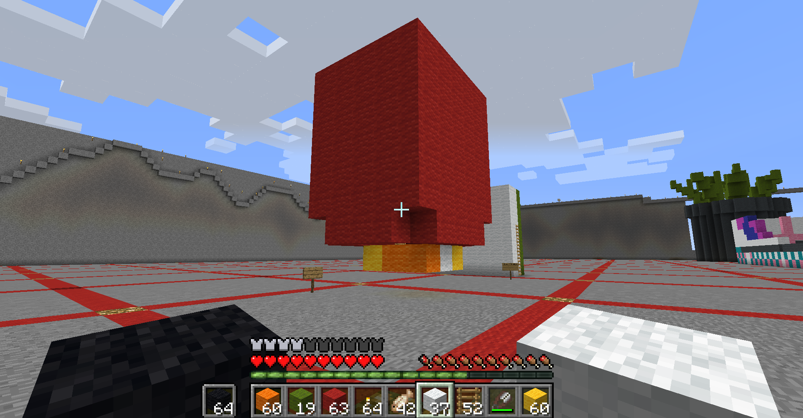

I first made this gltich piece in class and wanted to comment on human disruption of a natural eco-system. I wanted to look as if it was raining glitch to show how unatural the pelican feels.
For my Glitch art series of two, The first image was made with Notepad ++ and the second image with Audacity and Photoshop. These are both images I have taken from my google photos and I wanted to share something that relates to some thoughts. Both images incorporate feet with glitches to the original file where the first photos is a painted foot cast on top of nails, another of feet that are in water. I wanted the photos to represent pain and restriction with fluidity, feeling present, and freedom. I enjoyed the slight glitchiness of the second photo and how the sound file was removed of noise, equalized and tweaked with to show heat of the actual feet compared to the not-so-alive feet (castings) that have bars of glitch from the top and nails (from the photo) from the bottom. The question or thought I want to address with these two photos would then be what is restricting us from moving and being free? What pains the very feet we stand on (for instance, a hairstylist who stands many hours a day compared to someone who sits for many hours a day)? What would we need to be truly free? I want to title this series as "Beyond Your Feet" which also gives context to the photos.


I'm a pretty big advocate for spreading positivity and goodness around and automatically went to the Wholesome Meme database to become inspired to make a "new" meme. I have looked at several memes and the ones thought I could mash up nicely in photoshop was Fred Rogers, Kermit the frog, hearts, and the cutie pie meme. I then took the meme into Illustrator to add text/ context to what this meme means (and it is pretty straightforward). I wanted to spread the joy of memes that help others grow through a meme which is that very mission. It was tons of fun just looking at a ton of Wholesome memes and possibly share to give a smile in someone else's day. titling this: Let's spread the love Meme

Hello Everyone! For my Minecraft art piece, I decided to do something of Chinese culture--- particularly the lantern festivals. Therefore, I decided to do a floating red lantern (please excuse my screenshot that has all my "life stuff" under) from what I remember on how they look. Apparently, the Lantern festival just passed( Feb 19) this year! The city I lived in unfortunately banned it, but I still enjoy looking at the moments people capture online. It is a beautiful experience that marks the final day of Chinese new year (equivalent to like Christmas here in a sense). A celebration of the 15th day of the Chinese new year, the lit of lanterns is to show respect to the Buddha and is something I actually learned just now, wow!
Hello! So I took some photos of my 3D turn in. First off, My 3D prints are a bit artsier than I anticipated and plan to revise on it if I can or build onto it. I guess my ideas are more conceptual than I thought but in a 3D sense, it is rather plain. I shall try to 3D print more! My piece has cultural significance in Chinese culture, one being a major tile and the other a lantern. I wanted to show more of a painterly feeling of these 3-D prints and enjoyed creating my lantern to look more dimensional in Minecraft